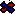

Sack may refer to:
Enemies
- Sack, a monster that spawns spiders.
- Walking Sack, a mobile version of the Sack.
- Fat Sack, a variant of the Fatty.
- Half Sack, a variant of the Fatty.
Items

 Bursting Sack, a passive item that makes most spiders passive.
Bursting Sack, a passive item that makes most spiders passive.- Juicy Sack, a passive item that spawns friendly Blue Spiders and leaves a trail of slowing white creep.
- Mystery Sack, a passive item that spawns random pickups.
- Sack Head, a passive item that turns pickups into Sack pickups.
- Sack of Pennies, a passive item that spawns pennies.
 Sack of Sacks, a passive item that spawns sacks.
Sack of Sacks, a passive item that spawns sacks. Lucky Sack, a Trinket that spawns a sack at the start of every floor.
Lucky Sack, a Trinket that spawns a sack at the start of every floor.-
 Keeper's Sack, a passive item that gives you stat bonuses for purchasing items at shops.
Keeper's Sack, a passive item that gives you stat bonuses for purchasing items at shops.
Pickups
 |
This disambiguation page lists articles associated with the same title. If an internal link referred you here, you may wish to change the link to point directly to the intended article. |